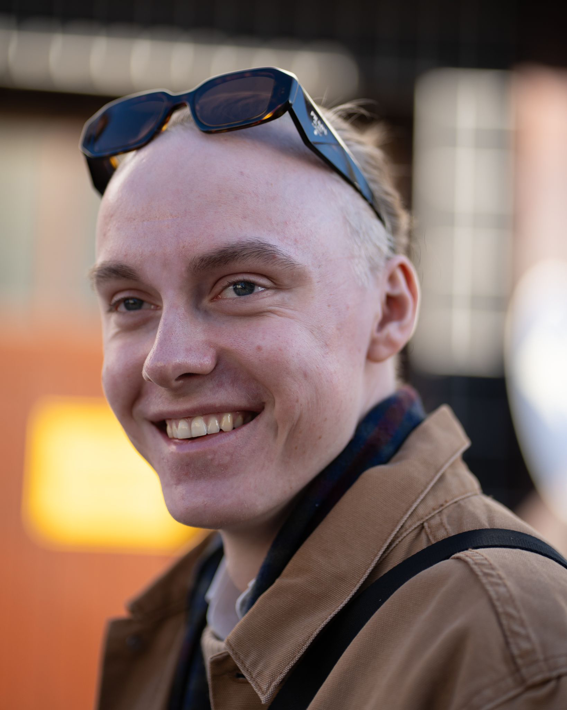

Paul Felix Hosang

I'm a interdisciplinarly interested creative and developer
Education
Allgemeine Hochschulreife (2.5) - year of graduation: 2023
Work experience
Freelance Design and Web-Development 2022 - today
- Customer supervision and consultancy
- Design, devlopment and deployment of Websites
- Social Media Marketing
- Print Design and Production
- Videography and Photography for Marketing purposes
Design and IT Student Job at Wahlkreisbüro Dr. Jens Zimmerann (2024 - today)
- Producing of Social Media content
- Designing of print media (i.e. election posters)
- IT supervision and consultancy
Skills
- Design Software (Adobe CC, Illustator, Photoshop, After Effects, Premiere Pro)
- 3D Software (Blender)
- Programming Languages (Java, HTML / CSS, JavaScript, Python)
- Microsoft 365 (Word, Excel, PowerPoint)
- Languages (German (C2), English (C1), French (Basics), Greek (Basics))
- Ten Finger Typing
- Organization of events (indepent party collective and voluntary commitment in different local organization